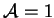
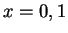

Weaver and Viskanta (1991c) performed experiments similar to those of Hu and El-Wakil (1974; reviewed in §3.3.2). The test cavity had . They also simulated the experiments numerically.
The experimental study suffers from the same flaw as that of Hu and El-Wakil: liquid is present on the opposing vertical walls (). This may give rise to two quite different problems:
Like Hu and El-Wakil (1974), Weaver and Viskanta were forced to resort to heating the connecting walls to prevent condensation, thus destroying the intended thermal boundary condition (linear variation).
Unlike Hu and El-Wakil (1974), they did not account for the slip velocity at the hot and cold walls due to the falling liquid film.
The agreement between the numerical and experimental results was generally poor, probably for the reasons listed. No attempt was made to compare the results with their other sets of numerical solutions (Weaver & Viskanta 1991a, b). The vapour and energy transfer rates were not reported.